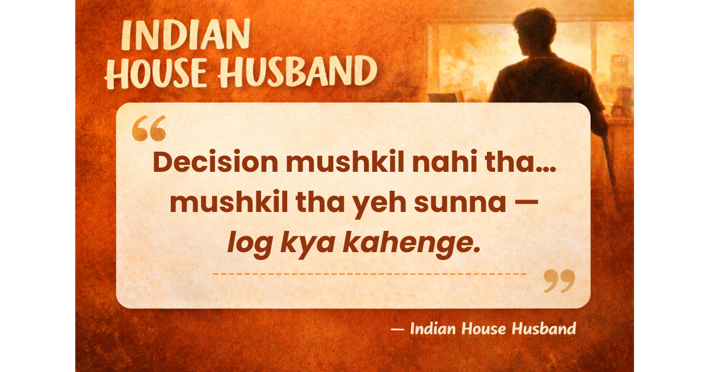

"What Will People Say?" Was the Hardest Question We Faced

When we first started thinking about becoming parents, the biggest question wasn't how we would raise a child.
It was something much more familiar.
"What will people say?"
At that time, both of us were working in IT, living alone in a metro city. Like most Indian families, we had support from our parents. They reassured us — "You have a child, we'll take care of everything."
But the reality was different.
All four of them were over 60. And expecting them to take full responsibility didn't feel right. More importantly, what was the point of becoming parents if we weren't ready to take responsibility ourselves?
So we made a decision. One of us would take primary responsibility for the home and the child. The other would take care of finances and support.
In theory, it sounded simple. In practice, it wasn't.
My wife enjoys her work. She thrives in that environment. I, on the other hand, have always been more comfortable with home, cooking, and managing daily life.
So the decision made itself. I would leave my job.
Financially, we were in a position to manage. We lived simply, didn't have extravagant habits, and were willing to adjust.
But none of that turned out to be the hardest part.
The hardest part was explaining it.
"Why leave your job?" "Why not your wife?"
And the toughest conversations weren't with society. They were with our own family.
Even today, I'm not sure if everyone is fully convinced.
But somewhere along the way, I realized something: not every decision needs approval to be right. Some decisions just need courage.
— Indian House Husband